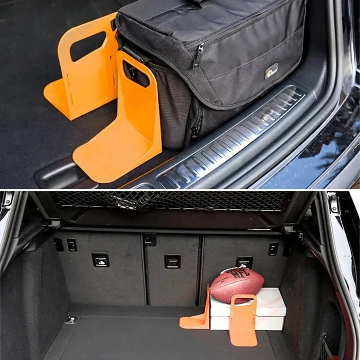

NICHT FREIGEGEBENER PRODUKTENTWURF
Keine eBay-Veröffentlichung. Fehlende Dokumente und Prüfpunkte bleiben offen. Versand und Gewinn sind nur Kalkulationswerte, keine Checkout-/Gewinnbestätigung.
AliExpress: 1005011848504195

Multifunktionaler Auto-Kofferraum-Werkzeughalter, Gepäckbox-Ständer, rutschfester Organizer, Aufbewahrungshalter Funktionen: Ideal für die feste Positionierung im Auto oder LKW-Organizer. Stellen Sie sicher, dass Ihre Gegenstände nicht wackeln, selbst wenn die Straße holprig ist. PP-Material, exquisites Design, ist sicher und langlebig. Magisches Klebeband an der Unterseite, um sicherzustellen, dass es rutschfest ist. Einzigartige Form, einfacher Stil, leicht zu installieren. Beschreibungen: Produktfunktion: Fixierrahmen für Gegenstände im Kofferraum des Autos. Funktion: Stoßfestigkeit, Empfangsbestätigung usw. für den Kofferraum des Autos (insbesondere für Flüssigkeiten und leicht erschütterbare Gegenstände). Verwendung: Ideal für die Aufbewahrung im Auto, hält Gegenstände sicher und ordentlich im Auto und verhindert Verschüttungen. Spezifikationen: Farbe: Grau/Orange Größe: 19*14*11,5cm Material: PP Im Lieferumfang enthalten: 1 x Fester Rackhalter Hinweise: Assistent 1. Aufgrund der Unterschiede zwischen verschiedenen Monitoren spiegelt das Bild möglicherweise nicht die tatsächliche Farbe des Artikels wider.Wir garantieren, dass der Stil dem auf den Bildern gezeigten entspricht. 2. Aufgrund der manuellen Messung und unterschiedlichen Messmethoden bitten wir um eine Abweichung von 1-3 cm. Danke!
| Material | ABS |
|---|---|
| Ursprung | CN (Herkunft) |
| CN | Zhejiang |
| Artikeltyp | Gepäckträger und Zubehör |
| Choice | yes |
| SKU | Quelloptionen | Bestand | Quellpreis EUR | Versandprognose EUR | Verkaufspreisprognose EUR |
|---|---|---|---|---|---|
| 12000056763805548 | {"Farbe": "Orange"} | 91 | 3.45 | 1.99 | 24.99 |
| 12000056763805547 | {"Farbe": "Gary"} | 291 | 3.95 | 1.99 | 24.99 |
Hersteller, Herstellernummer